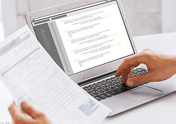

PRODUCT
SPS-ICT는 지금까지 함께 했던 많은 병원의 고객으로부터 “QUAD 덕분에 웃을 수 있었고, 만족스러웠고, 진료에 큰 도움이 되었다”고 들어왔습니다.
그리고 앞으로도 듣고 싶습니다. SPS-ICT의 열정과 변화가 시들지 않는 큰 원동력이기 때문입니다.
SPS-ICT 제품
-
 병원용 운영시스템 QUAD
VAN 대리점
부가세 환급 대행
신규 병원 설립시 IT 컨시어지
보안 소프트웨어 판매
SPS-ICT는 지금까지 함께 했던 많은 병원의 고객으로부터 “QUAD 덕분에 웃을 수 있었고, 만족스러웠고, 진료에 큰 도움이 되었다”고 들어왔습니다.
그리고 앞으로도 듣고 싶습니다. SPS-ICT의 열정과 변화가 시들지 않는 큰 원동력이기 때문입니다.